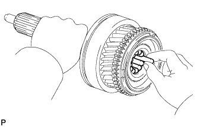
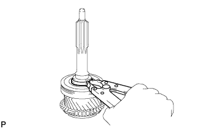
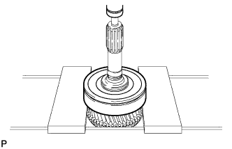

INPUT SHAFT > DISASSEMBLY |
| 1. REMOVE INPUT SHAFT BEARING |
 |
Remove the 12 roller bearings.
| 2. REMOVE FRONT BEARING SHAFT SNAP RING |
 |
Using a snap ring expander, remove the snap ring.
| 3. REMOVE INPUT SHAFT FRONT BEARING |
 |
Using a press, remove the bearing.